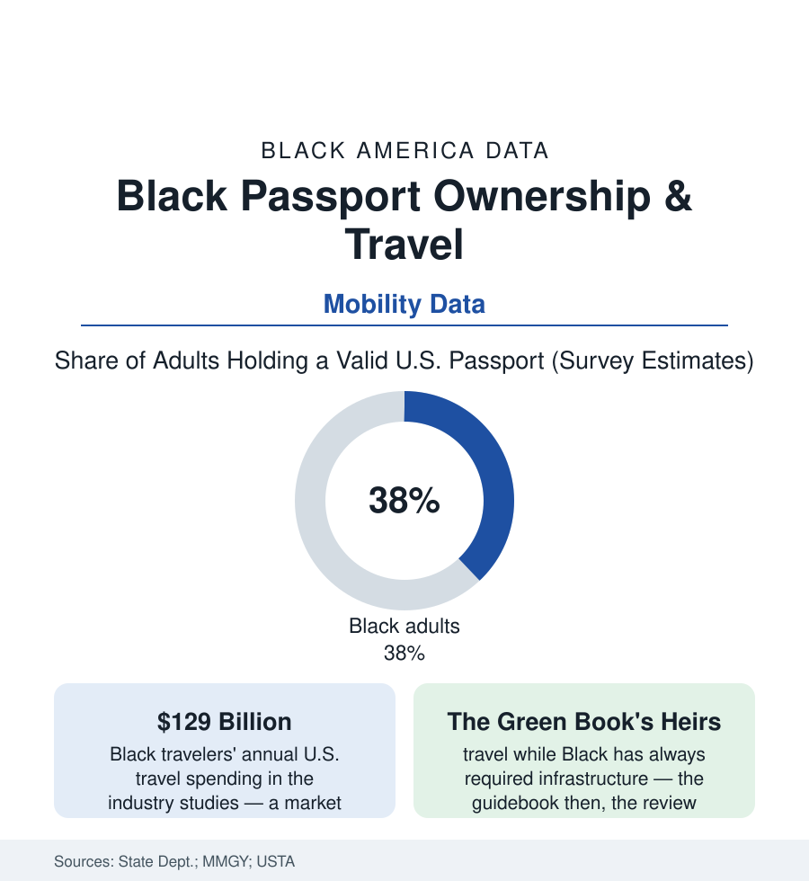

Black Census
The Passport Gap: Who Holds the Little Blue Book
Roughly half of Americans hold passports; Black Americans hold them at lower rates — and the travel data show a generation closing the gap on its own terms. The passport file.

Half of Americans now hold a valid passport — the little blue book having gone, in two generations, from a rarity to a middle-class standard. Black Americans hold them at lower rates in the survey estimates, a gap with paperwork roots and income roots — and the travel industry's own data show Black travelers spending at a scale that makes the gap a market story as much as a mobility one: the industry studies put Black leisure travel spending well past a hundred billion dollars a year. This article reads the passport file.
What a Passport Is Made Of
The document's prerequisites are a small census of the atlas's other files: the fee (a sum trivial to the salaried and real to the hourly — the application's hundred-plus dollars arriving atop the photo, the postage, the time off for the acceptance facility's weekday hours), the birth certificate (the foundational paper whose absence runs in the older Southern-born cohorts' records — the midwife-era births registered late or never in the state archives, the delayed-certificate process as a rite of the passport office's hardest cases, disproportionately the Delta and Black Belt born), the prior travel that begets the document's perceived necessity (the workplace that never sent you abroad, the family with no one overseas to visit — the immigrant file's mirror: the passport rate as a lagging indicator of networks), and the income ladder itself, whose rungs the issuance data shadow faithfully. Against the prerequisites stand the era's countervailing data: the post-2007 rule changes that passportized the Caribbean-and-Canada traveler (the Western Hemisphere requirement converting the cruise generation's paperwork overnight — issuance surging in the Black travel hubs' post offices in the federal statistics), the study-abroad file's students carrying the book home to families who then apply, the military's passports-by-service of the veterans file, and the social-media era's visible Black travel culture — the movement the industry quantifies in the MMGY studies (Black travelers reporting travel as identity and inheritance, group trips and heritage itineraries at the segment's front, Ghana's Year of Return drawing the diaspora file's largest single homecoming in the arrival data). Every prerequisite is small; the file's point is that they were never distributed at random, and neither is their absence.
The Industry's Side of the Counter
The travel file's business rows read like the beauty-supply article's in resort dress: the demand enormous and documented, the ownership and the welcome thinner — the representation audits of destination marketing (the brochure census in the industry studies: Black travelers barely visible in the advertising of the places their billions visit), the hospitality workforce's own ladder (the hotels article's management rows), the Black-owned travel sector answering in kind (the agencies and tour companies of the business file's quiet shelf — heritage-tour operators, the Black travel clubs and conferences industrializing the group trip, the review platforms built because the mainstream ones didn't carry the one data point the Black traveler needs first: how a place treats us, the Green Book's function rebuilt as an app, its necessity attested by its downloads). The air-travel data add the friction rows (the screening and secondary-inspection disparities the traveler surveys record, the hair pat-downs documented into a policy change at the security agency — the passport's promise of frictionless movement audited, as ever, at the checkpoint). And the forward curve in the issuance statistics is the file's conclusion written early: each recent cohort of Black applicants larger and younger than the last in the State Department's volumes — the gap closing the way the atlas's closable gaps always close, from the demand side, document by document, until the little blue book is as ordinary in the Black Belt's drawers as it is in the suburbs'.
Reading the Passport Data
A passport is the state's certificate that you may leave and return — and its distribution maps, with unusual honesty, who the country has equipped to be global. The issuance tables are published without commentary every year. Read against the travel spending, they describe a people funding an industry at full price while holding its basic document at a discount — and closing that last distance faster than any generation before them.
More in Black Census
The Black Population of the United States: Size, Definitions, and Distribution
The Black population of the United States totals 52.8 million — 15.4 percent of the nation. How the Census Bureau defines and counts the population, and where it lives.
Black Median Household Income in the United States
Black median household income stands at $56,490 in the Census Bureau's annual income report — how the figure is measured, how it compares, and what drives it.
The Black Poverty Rate: Levels, Children, and the Long Trend
The official Black poverty rate is 17.1 percent — against 11.1 percent nationally and 7.7 percent for non-Hispanic White Americans. How poverty is measured and what the data show.
Source: U.S. Department of State passport issuance statistics; U.S. Travel Association research; MMGY Black traveler studies; Bureau of Transportation Statistics air travel data.